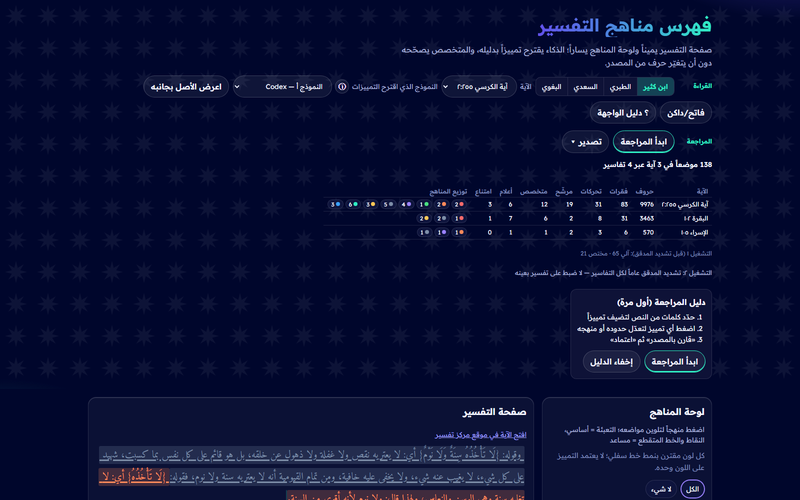
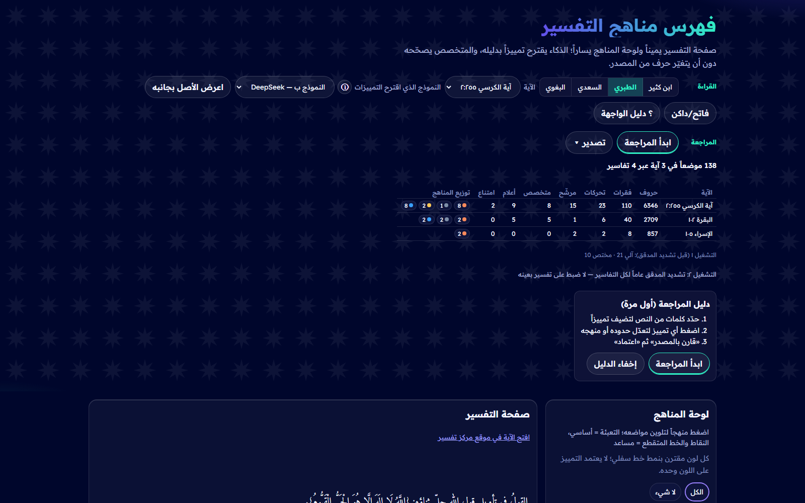

منهج واحد
أربعة تفاسير: ابن كثير · الطبري · السعدي · البغوي. ٣ آيات بلا ضبط لتفسير بعينه.
فهرس مناهج التفسير
تجربة قابلة للفحص، وصفحة تُظهر الدليل في النص.
أربعة تفاسير: ابن كثير · الطبري · السعدي · البغوي. ٣ آيات بلا ضبط لتفسير بعينه.
نموذجان مختلفان على ابن كثير أعطيا نتائج متقاربة: ٢٣/١٩ و٢٦/١٨.
وجدنا المدقق متساهلاً؛ فشدّدناه عاماً لكل التفاسير، ونشرنا النتيجتين.
كل موضع مطابق للمصدر حرفاً بحرف، وحواشي المحقق مفصولة عن كلام المفسِّر.
| التفسير | مواضع | قبول آلي | للمتخصص |
|---|---|---|---|
| ابن كثير | 42 | 23 | 19 |
| الطبري | 31 | 18 | 13 |
| البغوي | 39 | 29 | 10 |
| السعدي | 24 | 15 | 9 |
أرقام تجربة أولى؛ الدقة تُقاس بعيّنة المتخصص.

النموذج أ١٢٣القراءة والتحقق

النموذج ب٤٥٦المراجعة والتصدير
المواقع الكبرى تعرض ماذا قيل عن الآية؛ نحن نكشف كيف فسّرها المفسِّر في نصه، بالدليل.